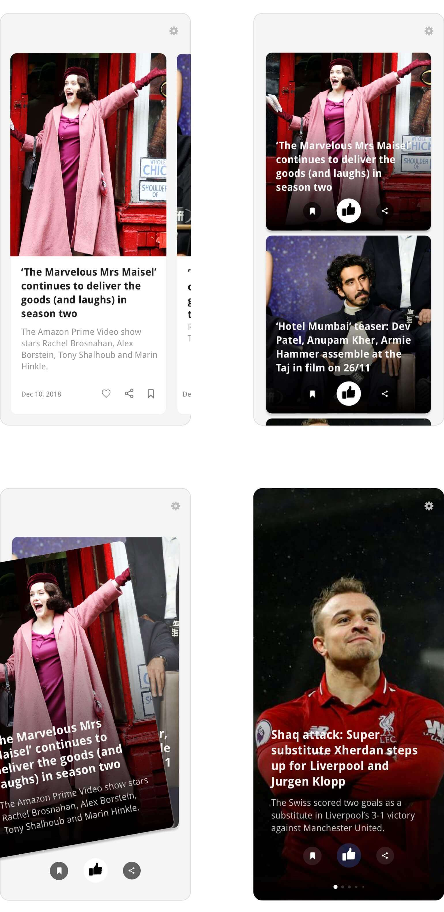
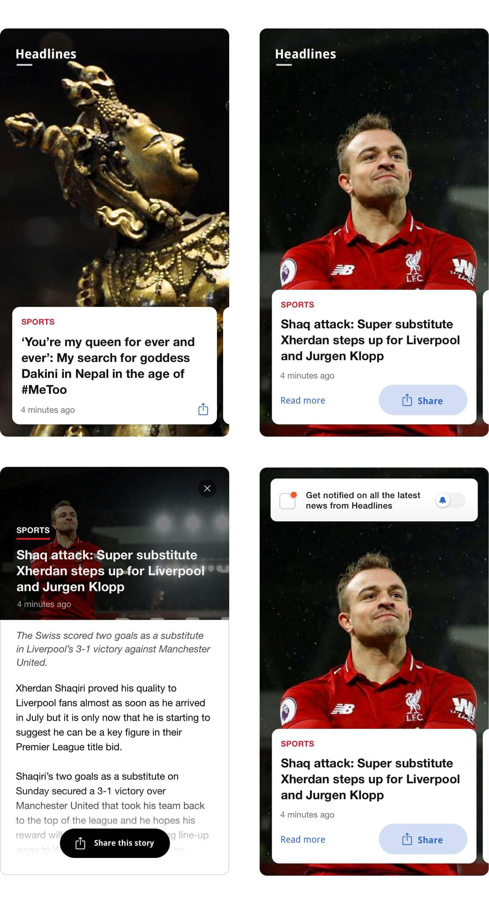
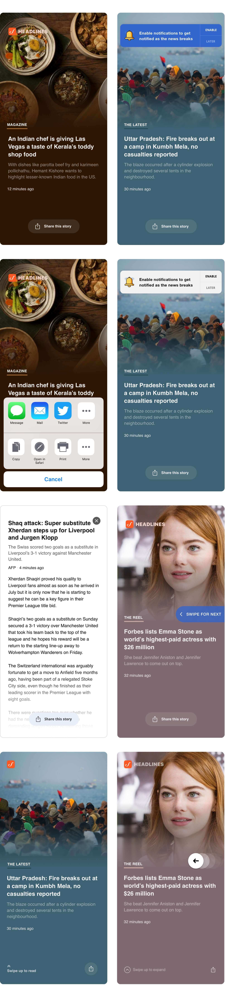
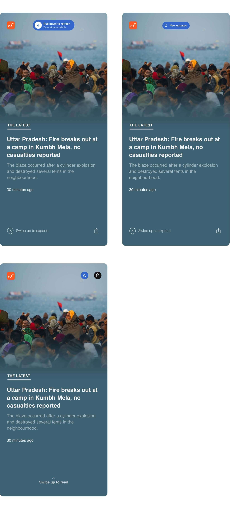
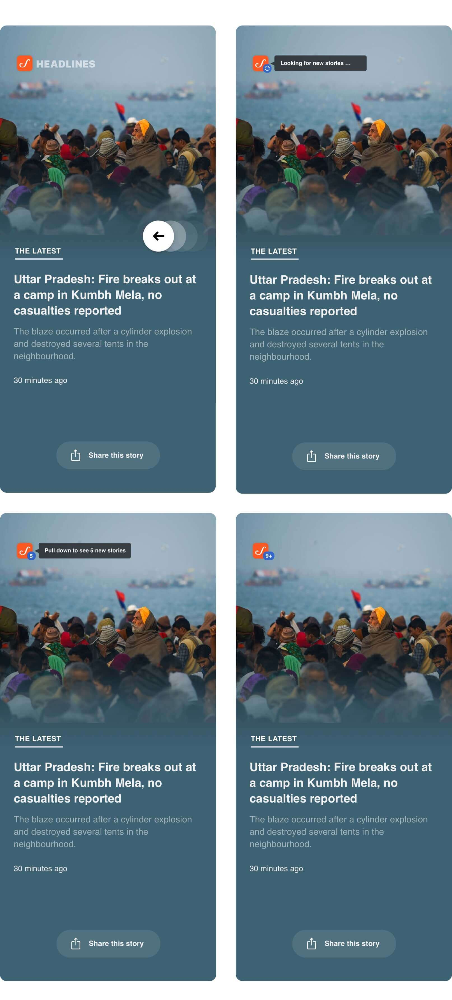
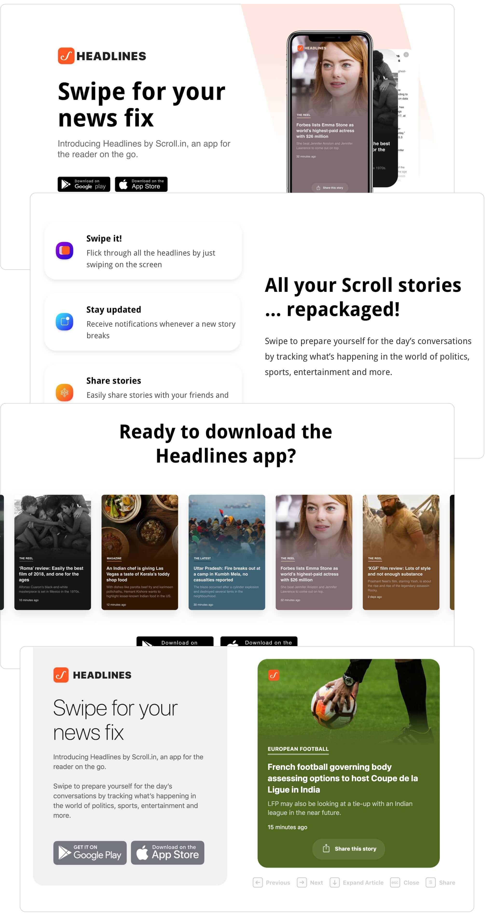
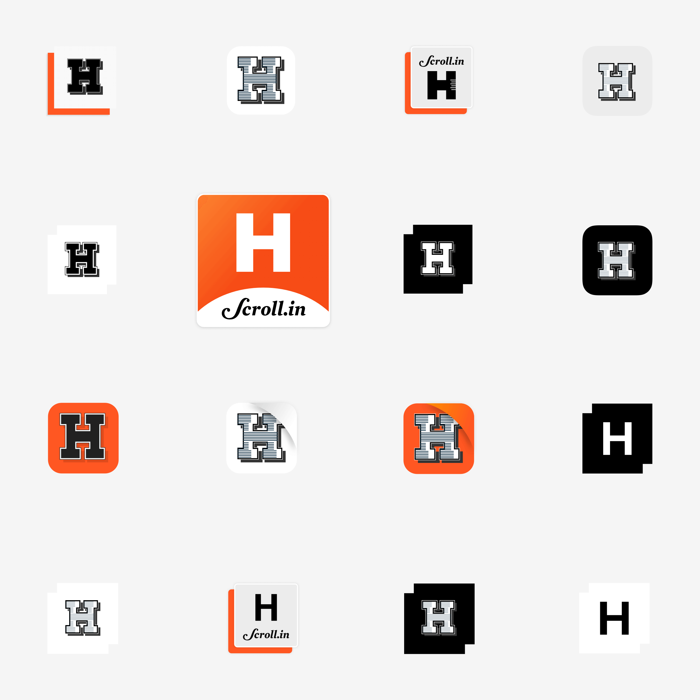
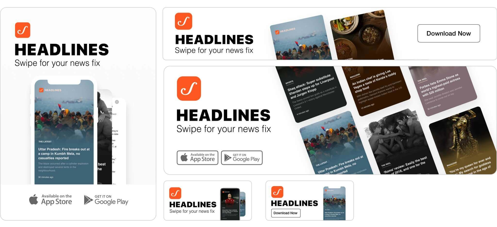
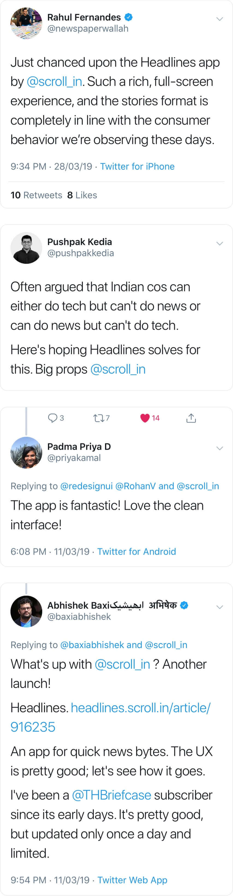

On March 11, 2019 we launched the Headlines, an app focused on enabling readers to quickly glance through the day's news and happenings. I was the product designer on this project contributing towards the design iterations and HTML/CSS of Headlines.
Here's how we made it happen.
Over the past four years, Scroll.in has grown from being a daily news-magazine, somewhat eccentrically publishing five stories every morning, into a comprehensive, one-stop news source – running the latest stories as they break. 80% of our readers view stories on their mobiles.
As the General Elections drew near, we observed that there was an opportunity to create a mobile-only experience for readers to quickly catch up on the news and events of the hour. The intent was to create another avenue for our readers to browse through latest news as well as attract a new audience on Scroll. After internally debating this idea, we set about creating design explorations around how this could take shape.
We started out by conducting internal design interviews with select readers and members of the Edit Team. Our goal was to find a pattern of what readers generally look for in an experience that enables them to glance through headlines. We found that –
Readers wished for a no-frills, simple and fast experience to breeze through the headlines.
They would prefer to customise their feed specific to their interests
They would like to be able to easily share a news or event with their friends
We also studied some of the apps that readers used to quickly assimilate the news; Inshorts and Flipboard being most popular.
Our first batch of low-fidelity mocks allowed us to understand how a distraction-free, minimal UI could work. The general idea was that readers could swipe up or side-ways to flick through headlines and tap them to read in detail. They could also save, share or like a particular news. Tapping the Like button could personalise their feed to suit their interests. A screen at the start of the app that allowed readers to select categories and interest they wanted to see was also considered.
We sat with the tech team and reviewed the possibilities for V1. We decided to streamline the experience and cut back on features we didn't necessarily need to build the first version. We also wanted to explore the possibility of a full-screen, simple and minimal-to-zero UI version for this app. Our goal here was to enable readers to stay focused on skimming through headlines. The app being easy to pick up and navigate was crucial.
Moreover we needed to look into ways in which we could showcase images in the app. At Scroll, we do not have portrait version of images for the news we publish. Our stories usually have two major types of image crops; wide (for use in article pages, social media, cards, cover story, etc.) and square (for thumbnails, audio stories, etc.) Do we introduce a new crop for the reporters and the Edit Team to create for all new stories or do we explore design solutions to re-use current versions of image crops?
Lastly, Scroll has predominantly used Droid family of fonts on all major products for over 4 years. With Headlines, we wanted to explore using a system's default font to not only simplify the design but also improve performance of the app by avoiding external fonts.
The next few iterations brought us closer to the original vision for the first version this app. The Like and Save button were gone, leaving only the ability to swipe through the news and share them. We also started building initial iterations of an article detail screens and the PWA notification prompt.
These iterations had a few problems. The wide aspect ratio of images caused them to get insanely cropped off-screen. Lack of a sub-headline meant readers had to open the article to get more context on the news. While re-using the card design language already present on Scroll could help readers understand the navigation and flow of the app, we believed we could streamline this further to bring focus to the feel of individual event and news.
In these latest iterations, we reduced the height of wide aspect ratio images leading to only minimal part of the image getting cropped off. We also introduced a gradient to subtly blend into these images. We chose the gradient color by processing the visible part of the image and picking a dominant color from it. If the gradient color was lighter than our pre-defined threshold, we turned the text and UI dark.
The reader interaction remained similar to the previous iterations; swipe left and right to skim through the news, swipe down to reload the app and swipe up or tap to read the news in detail.
For branding inside the app, we chose to keep Scroll's app logo in the top left. The Headlines part would show upon launching the app and then disappear after a few seconds. This enabled the images to feel more immersive.
While the initial feedback was positive, our testers were rarely swiping down to fetch new stories. We dabbled with the idea of having a walkthrough for major actions when the app is first launched, however this posed a few problems –
We wanted readers to directly jump into swiping the news. A walkthrough interfered with this.
Swiping left, right and up required no walkthrough as our initial test results indicated.
What if a reader ignores the indicator or forgets how to fetch new stories?
We wanted to not only clearly show how to fetch new stories but also give an impression that Headlines was dynamic and there were new stories to see every few minutes. After a few iterations on this idea –
– we experimented with making Scroll logo in the top left of screen into a hub of announcing updates.
To avoid distractions every few minutes a new story is fetched, the black pop-up is shown only once per session. After that, only the number inside the blue circle is updated on subsequent fetch of new stories.
This iteration of fetching stories received great feedback in the internal tests and we decided to freeze this approach for V1.
Since Headlines is a web-app, we explored options to create a landing page for readers who visit on the URL from desktop. Ultimately, we challenged ourselves to let desktop readers get a taste of using the actual product instead of relying on screenshots or videos. To do this, we introduced an ability to navigate the Headlines interface using keyboard shortcuts.
We now started exploring what the brand identity of Headlines would be.
We realised that even though Headlines was a new product, tying it's identity closer to Scroll could help avoid confusion for readers and let us leverage the trust that they have in Scroll's brand.
As we inched closer to the release date, we took up the design of various promotional material for Headlines. These included ads to be displayed on Scroll.in (Masthead, In-article, Below navigation, On Homepage, etc.) and ads for social media (Facebook, Instagram and Twitter). Our intent was to bring out the clean, colorful and full-screen experience of Headlines in these ads.
We launched the app on March 11, 2019. Headlines received an overwhelming positive feedback from readers. Over the next few months, we're looking into introducing filters for category/topic, bookmarks and comments for Headlines. You can swipe through Headlines by downloading it for Android, iOS or visit it on the web.
Thanks for reading. All Projects